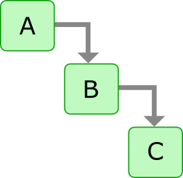
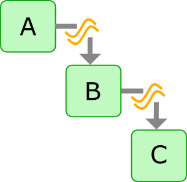
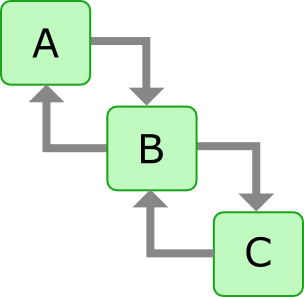
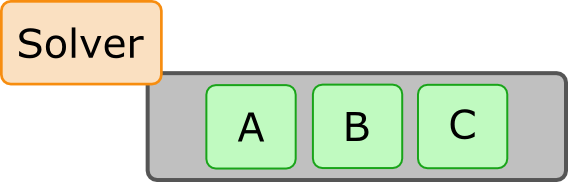
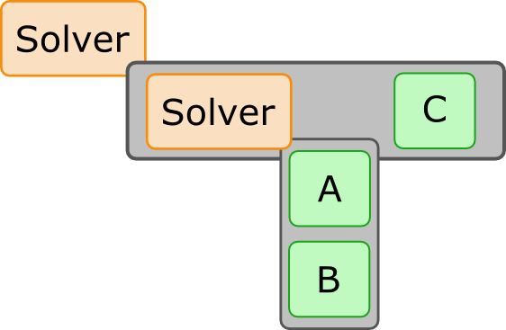
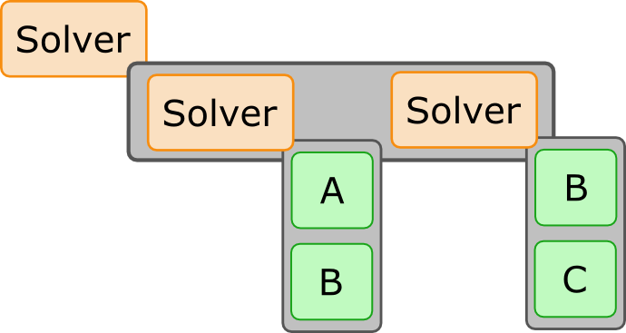
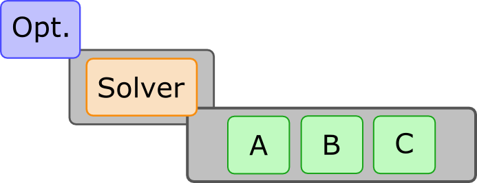

Installation and Introduction
Created by The OpenMDAO Team
Standard Pre-Reqs
- Python 2.7
- Numpy
- Scipy
- MatPlotLib
- (Windows) pywin32
Hackathon Pre-Reqs
- Git
- Compilers!
- Windows: Mingw
- Mac OSX: Xcode + gFortran
- Linux: gFortran
- Clone of OpenMDAO Repo
git clone -b hifi https://github.com/OpenMDAO/OpenMDAO-Framework.git
MacOS "Pro Tip": Homebrew
Full InstructionsShort version:
brew install python
pip install numpy
brew install gfortran
pip install scipy
brew install freetype
pip install matplotlib
brew install git
Also great for SU2 pre-reqs
brew install metis
brew install open-mpi
Seriously, Homebrew is awesome!
Installing with The "go" script:
python go-openmdao-dev.pynote: you need to be connected to the internet!
While we wait... Questions?

Activate OpenMDAO
Navigate into the top level OpenMDAO source directory
- Linux, MacOS:
. devenv/bin/activate - Windows:
devenv\Scripts\activate - Run the tests:
openmdao test --small -
You should see output like:
Ran 716 tests in 54.072s OK
Introduction
What is OpenMDAO?
- Python based framework for engineering design
- Built in support for advanced MDAO tools and methods
- Permissive Open Source License: Apache V2.0
- http://openmdao.org
- Uses: Aircraft, engine, wind turbine & farm design, small satellite design, Digital Signal Processing
Core Concepts:
- Dataflow
- Drivers
- Workflow
Dataflow
Dataflow: How information moves around your model 
Data is fed from A to B, and from B to C.
Data passing, or data connections
Another way to think about Dataflow
Equality constraints between inputs and outputs 
A.out = B.in
B.out = C.in
So why is the distinction important?

Solid connections imply an explicit ordering: A->B->C
What is the proper order for this multidisciplinary dataflow?
In OpenMDAO dataflow only defines relationships between components.
It does not directly dictate execution order!
Note: For feed forward cases, we do have a way to extract execution order from dataflow
Drivers
Solvers, Optimizers, DOE, etc.
Any iterative process will be represented as a driver in OpenMDAO
Built in Drivers
- Optimizers:
- CONMINDriver
- SLSQPDriver
- COBYLADriver
- NEWSUMTDriver
- Genetic
- Solvers:
- FixedPointIterator
- BroydenSolver
- Misc:
- DOEdriver
- CaseIteratorDriver
- SensitivityDriver
Workflow
Each driver has a workflow that specifies a set of components to run, and the order to run them in
What workflow would you define for a solver to converge this problem?
Converge everything at one
Converg A & B first
You can nest drivers into the workflow of other drivers
Lots of sub-iterations
What would it look like if you wanted to optimize this problem?
Basic Tutorial
Goal: Introduce you to the basics of building OpenMDAO models so you can start your project
General Layout of an OpenMDAO model
#import necessary libraries and classes
from openmdao.main.api import Assembly, Component
from openmdao.lib.drivers.api import SLSQPDriver
#define your Assembly sub-class
class MyAnalysis(Assembly):
#use this function to set up your assembly
def configure(self):
#adding components
self.add('c1',Component())
self.add('c1',Component())
#connections
self.connect('c1.out','c2.in')
#driver & workflow setup
self.add('driver',SLSQPDriver()) #the top Driver is called 'driver'
self.driver.add_parameter('c1.dv1')
self.driver.add_objective('c2.objective')
self.driver.workflow.add(['c1','c2'])
if __name__ == "__main__":
a = Assembly() #now you can do something with it
The Sellar Problem
\[\begin{aligned} \min{F(x_1,y_1,y_2,z_2)} & = x_1^2 + z_2 + y_1 + e^{-y_2}\\ w.r.t. & x_1,z_1,z_2 \\ s.t. & \frac{y_1}{3.16} - 1 \geq 0 \\ & 1 - \frac{y_2}{24} \geq 0 \\ & -10 \leq z_1 \leq 10 \\ & 0 \leq z_2 \leq 10 \\ & 0 \leq z_1 \leq 10 \\ \\ \end{aligned} \] \[\begin{aligned} D1: & y_1(z_1,z_2,x_1,y_2) = z_1^2 + x_1 + z_2 - 0.2y_2 \\ D2: & y_2(z_1, z_2, y_1) = \sqrt{y_1} + z_1 + z_2 \end{aligned} \]
Activate your OpenMDAO environment, then get out of the source directory. Make a new folder somewhere you want to work today.
Go to the OpenMDAO docs on the Sellar problem and copy the code there
or
Download the sellar.py file we provide.
Note: if you download the file, it will have some extra stuff in there that we'll use later